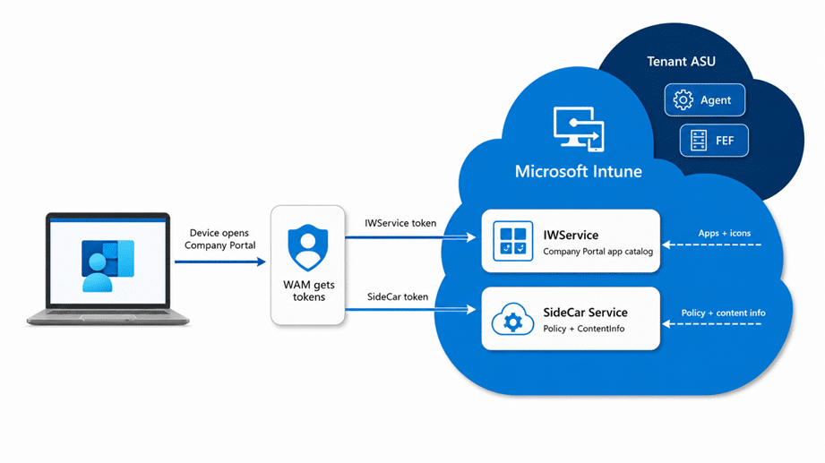
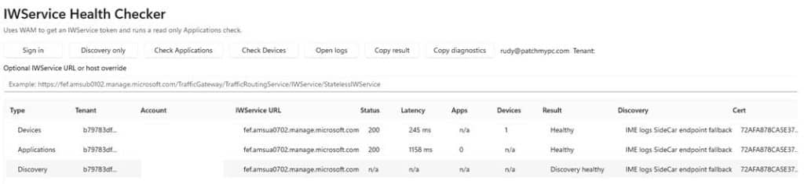
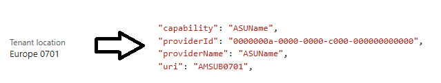
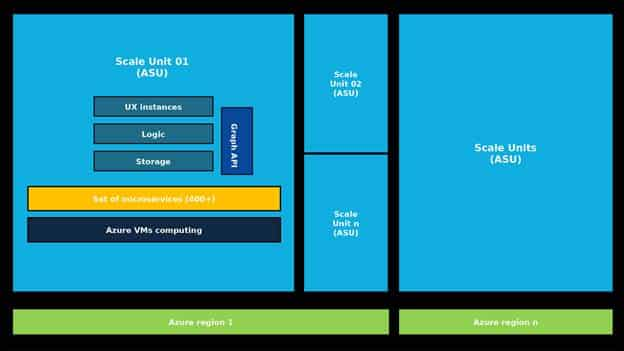

This blog starts with a simple Company Portal error: Error Loading Apps. But when the same issue appeared in the web portal, and IWService started returning HTTP 500 and 503 responses, it became clear that this was not just another client-side problem. So I started investigating what happens when the Company Portal loads the Applications list. To do so, I needed to look at the Intune Azure Scale Unit serving the tenant and build a resolver to show where that Tenant and ASU are hosted.
Error Loading Apps Introduction
It started as one of those issues where the UI does not really tell you what went wrong. The Company Portal got an error loading apps.

There was no really useful error… only the Company Portal message that there was an error loading apps. Somehow, the company portal refused to show what the user expected to see. At first, that sounds like the usual troubleshooting list. Check the device. Check the network. Check the proxy. Check if SSL inspection decided to interfere again.
But the behavior of error loading apps did not really fit a simple client issue. The same kind of problem showed up in the web Company Portal. The Company web portal blade also did not return the expected application data. From the outside, it looked like one of those vague Intune cloud moments where everything is half working and half not.
That is usually the point where I stop looking at the error message and start looking at the path behind it. Because the Company Portal does not magically know which apps belong to a user or device. It needs to ask the Intune service. Somewhere behind that app list, there is a service path, backend routing, and an Intune scale unit doing the actual work.
If that path starts returning 500 or 503 responses, the user only sees a simple symptom: Error Loading Apps: That is where IWService became interesting.

The better question was not only: is Intune down? The better question was: what broke, where did it break, and which ASU is this tenant actually using?
A quick note on IWService
Before we go further, it helps to explain what I mean by IWService. The IWService (Information Worker Service) is not a public Intune API that Microsoft documents for admins to use directly. In this blog, I use the IWService to describe the tenant-specific Intune service path behind parts of the Company Portal experience.
When the Company Portal opens, it not only reads local device data. It signs in the user (Token), discovers the correct tenant service location, and talks back to Intune through a tenant-specific route like: https://fef.<scaleunit>.manage.microsoft.com/TrafficGateway/TrafficRoutingService/IWService/StatelessIWService. The Company Portal uses IWService to retrieve the user’s devices, available applications, application details, categories, company terms, and application state.


That distinction matters. The Company Portal can also talk to the local Intune Management Extension bridge to retrieve Win32 app status from the device, but the app list and user scoped Intune data still depend on the tenant specific IWService path.

So when the IWService service side starts returning 500 or 503 responses, and the Company portal shows that there was an error loading apps, the device can look perfectly fine from the outside. The MDM certificate can still be valid. WAM can still return a token for the IWService and SideCar service, and the IME can still be running. But the Company Portal may still fail to load apps because the backend on the ASU itself can be unhealthy.
That is what makes this type of issue easy to misread as a client problem. The visible symptom is “The Company Portal error loading apps”, but the failing component could be the IWService Micro Service on only your Azure Scale Unit..
The IWService question
The Reddit thread about Company Portal issues was a good example of the kind of signal you sometimes see before a clean service health message appears. Multiple admins reported that the Company Portal showed that there was an error loading apps. One of the interesting details was a reference to HTTP 500 and 503 responses against `fef.amsub0102.manage.microsoft.com`.

That does not prove the root cause. But it did show the same pattern I explained in the previous chapter. The device can have working internet. The Intune portal can partly load. The Microsoft status page can still look quiet. And yet the IWservice that is required for the Company Portal for app enumeration can still be broken.
So we also built a small IWService tester. Nothing fancy. Sign in with WAM (web account manager), discover the tenant service path, call the Applications or Devices endpoint in a read only way, and record what comes back. Status code. Latency. Item count when it is returned. Raw error body when Intune gives us one.


That helped immediately, but it also showed the limit of the test. With WAM you test the tenant path for the account you are signed in with. That is exactly what you want for one tenant, but it does not tell you whether the another tenant/azure scale unit also has errors loading apps.
Is this local, tenant-specific, or global?
The supported places still matter. Intune Tenant Status shows tenant details, connector status, service health, messages that require action, and Message center posts. Microsoft 365 Service health shows incidents and advisories that affect your tenant.
Those should still be the first places to look. I am not trying to replace them… (well just a bit maybe) The problem is timing and scope. When the issue is new, small, or limited to one backend path, the official pages do not always give you the answer while you are still trying to understand what is happening.
That is when you need another piece of evidence. For me, that missing piece was the ASU. If two tenants are both in Europe but they live on a different azure scale unit, one tenant can be broken while the other one works. Without the ASU context that looks random. With the ASU context, it starts to make sense.
So what is an ASU?
ASU stands for Azure Scale Unit. Older Intune documentation made that concept much clearer. In Tenant administration, under Tenant status and Tenant details, the tenant location could show values such as `North America 0501`, `Europe 0202`, or `Asia Pacific 0301`.


The old documentation explained that you could match that number to an ASU table for app and script deployment endpoints.
That table is older, and it is no longer the way Microsoft documents the current endpoint story. I would not use it as current firewall guidance. But it gives us a clue. `AMSUB0701` was not just a label. It represented an Intune scale unit. Microsoft still uses the scale unit concept in current Intune communications, for example, when describing staged rollout behavior.
The older Intune operations deck made the architecture easier to picture. It showed Intune services running in Service Fabric clusters. In that deck, the ASU was represented as that Service Fabric cluster. That does not mean we can fully describe the current Intune backend from the outside, but it gives us a much better mental model than saying: somewhere in Europe.

Redrawn from the Microsoft Intune operations deck: Intune services represented as a Service Fabric cluster, with FE stateless and MT stateful node types inside the ASU model.
The same deck is useful because it does not portray Intune as a single magical server. It shows a scale unit, node types, and services. The front side is stateless. The middle-tier side owns the state. There are service partitions and replicas. That is already enough to explain why one part of the Intune experience can fail while another part still works.
The Azure Scale Unit Discovery Map
Once I had the ASU names, the next question was obvious. Where are they? Not the exact building. Microsoft does not publish that, and I am not going to pretend a DNS lookup gives me the front door badge number. The useful level is the Azure region: North Europe, West Europe, East US, Southeast Asia, Central India, Australia East, and so on.
For the Azure Scale Unit resolver, I focused only on the two host families that mattered for this question: `agents.<stamp>.manage.microsoft.com` and `fef.<stamp>.manage.microsoft.com`.

The `agents` hostname gave the better backend signal. Resolve it. Match the IP against Azure Service Tags. Take the region code from the service tag and compare it with the public Azure regions list. That still does not tell us the exact datacenter. It does tell us whether the evidence points to North Europe in Ireland, West Europe in the Netherlands, East US in Virginia, Central India in Pune, or another public Azure region.
That is why I wanted a map. Saying `Europe 0701` is interesting, but it does not help much when you are trying to explain a pattern. Saying the evidence points to North Europe is better. Showing it on a map is even better, especially when you are trying to compare tenants quickly.

What the resolver showed
The resolver grouped the active `agents` endpoints by Azure region and added IP geolocation as extra context. I treated the IP geolocation as supporting evidence only. The stronger signal was the Azure Service Tag match, because that came back with the Azure region code.
In this test set, North America spread across West US, West US 2, Central US, South Central US, East US, and East US 2. Europe mainly landed on North Europe and West Europe, with one Switzerland North stamp. Asia Pacific landed on Southeast Asia, Japan East, Central India, and Australia East.
| Service area | Azure region evidence | Public region location | ASU aliases seen |
| North America | West US, West US 2, Central US, South Central US, East US, East US 2 | California, Washington, Iowa, Texas, Virginia | AMSUA0101, AMSUA0102, AMSUA0201, AMSUA0202, AMSUA0401, AMSUA0402, AMSUA0501, AMSUA0502, AMSUA0601, AMSUA0602, AMSUA0701, AMSUA0702, AMSUA0801, AMSUA0901 |
| Europe | North Europe, West Europe, Switzerland North | Ireland, Netherlands, Zurich | AMSUB0101, AMSUB0102, AMSUB0201, AMSUB0202, AMSUB0301, AMSUB0302, AMSUB0501, AMSUB0502, AMSUB0601, AMSUB0701, AMSUB0901 |
| Asia Pacific | Southeast Asia, Japan East, Central India, Australia East | Singapore, Tokyo/Saitama, Pune, New South Wales | AMSUC0101, AMSUC0201, AMSUC0301, AMSUC0501, MSUC06, AMSUIN01, MSUD01 |
What is inside an ASU?
An ASU should not be explained as one simple server. The older Microsoft Intune operations deck gives us a useful public model: the ASU is represented as a Service Fabric cluster. Inside that cluster, you have node types and services. The front side is stateless. The middle-tier side is stateful. That distinction matters.
Microsoft’s Azure Architecture Center explains the deployment stamp pattern in a way that fits this pretty well. A service can run multiple independent copies of its application components and data stores. Each copy can be called a stamp, service unit, scale unit, or cell. Each stamp serves a subset of tenants and can fail without the other tenants on the other stamps failing at the same time.
That is why these failures are annoying to troubleshoot. A front-facing endpoint can answer, while a backend service returns 503, and the company portal shows there was an error loading apps. The App content download can work while IWService fails. One European tenant can be broken while another European tenant works, simply because they are not on the same ASU or not using the same broken service path.

Updated redrawing based on the Microsoft Intune operations deck: tenants routed to regional ASUs, each with a Service Fabric cluster, partition replicas, and per-ASU DR storage.


Updated redrawing based on the Microsoft Intune operations deck: one ASU inside an Azure region with UX instances, logic, storage, Graph API, microservices, and Azure VM compute.
Back to the Error Loading Apps Error
So, back to the original issue. Company Portal Error Loading Apps.
The user sees a simple error message, but behind that simple failure lie multiple possible layers. Local network. Proxy. Device state. IWService. Tenant backend stamp. Wider Intune service health.
The IWService checker helps with the first real question: can this tenant path actually return the app data right now? The ASU resolver helps with the next question: where does the backend stamp appear to live? The map makes that easier to explain.
None of this replaces Microsoft Service Health or a support case. It just gives you better evidence before you open one. When Company Portal refuses to load apps and everything still looks green, I want to know three things: what broke, where it broke, and in which ASU is this tenant located?